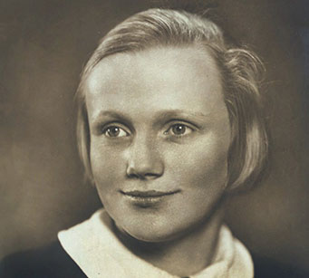

| MUSEUM WOLFENBÜTTEL | |
| Newsletter · Oktober 2026 | |
| Museum aktuell | |
| Entdecken Sie Neues im Museum | |
Liebe Freundinnen und Freunde des Museums, hier stellen Sie Ihre Ausstellung, Ihre Veranstaltung oder eine Neuigkeit vor. Fügen Sie ein Foto hinzu und verlinken Sie weitere Informationen auf Ihrer Website. | |
| |
| AUS DEM MUSEUM С ЛЮБОВЬЮ | |
| Was steht als Nächstes an? | |
 | |
Hier ist Platz für den Termin, den Veranstaltungsort und eine kurze Beschreibung.Erst waren es Schüler, die ihrem Unmut über marode Schulgebäude, fehlende Vertretungslehrer und vollgestopfte Stundenpläne in den vergangenen Wochen Luft machten. Die Proteste, bei denen es auch schon Gewaltexzesse gab, öffneten das Tor für breitere Demonstrationen. Der Frust hat sich angestaut: über hohe Lebenshaltungskosten, teuren Sprit und niedrige Einkommen. Viele Menschen in Frankreich stecken finanziell in der Klemme. Die Dürre des Sommers hat die Probleme der Landwirte verschärft. Pflegekräfte oder Feuerwehrleute fühlen sich angesichts der Herausforderungen unterbezahlt. | |
| |
| Museum Wolfenbüttel Schloss Museum und Bürger Museum |